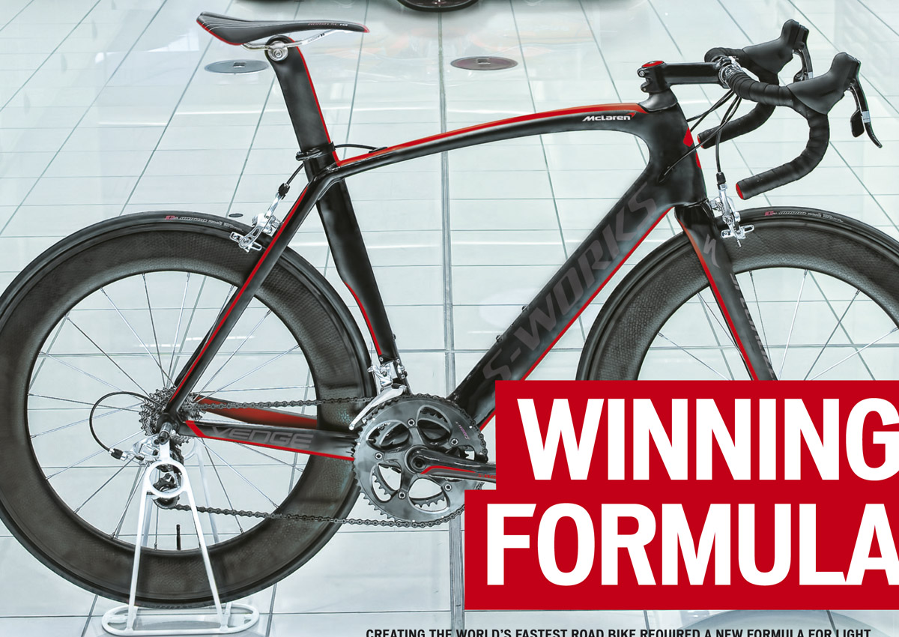

Fietsfabrikant Specialized heeft samen met de technici van het Formule 1 team Mc Laren een nieuwe wegfiets, Mc Laren-Venge, ontwikkeld. Dit was meteen ook de winnende fiets van Matthew Goss, winnaar Milaan Sanremo van het voorbije weekend.
Het is een nieuwe formule op gebied van lichtgewicht, stijfheid en aerodynamica. Specialized verliet de fietswereld en nam de Venge mee naar McLaren. Hierdoor konden nieuwe materialen, technologieën en productiemethodes worden toegepast, die normaal gesproken exclusief bestemd waren voor de Formule 1. Op 17 maart jl. werd dit innovatieve project gepresenteerd aan de wereldwijde pers in het McLaren Technology Centre gevestigd in het Engelse Woking.
De Specialized S-Works McLaren Venge beschikt over technologieën uit de Formule 1 industrie. Een samenwerking zoals deze is nog niet eerder vertoont in de fietsindustrie. De overwinning van Matthew Goss in Milaan Sanremo op zijn nieuwe Specialized S-Works McLaren Venge maakt de samenwerking met McLaren nu al tot een groot succes.
Verdere info betreffende de nieuwe machine tussen de Shiv en de Tarmac kan je hier terugvinden.